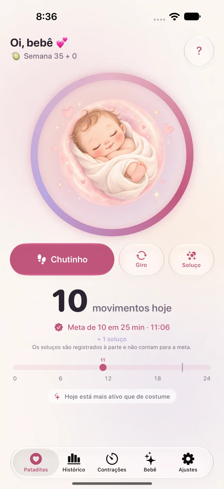

Pataditas / Como usar o Pataditas
Como registrar os movimentos do bebê no Pataditas
O Pataditas é um diário privado de gravidez para iPhone. Você registra os movimentos que sente e o aplicativo salva o horário e o tipo. Este guia explica o uso do produto, não um método médico de contagem.
Registre um movimento em quatro passos
Abra a tela de movimentos
Conclua ou pule a personalização opcional. Se aparecer a oferta do Plus, feche-a para continuar com a contagem grátis.
Registre com um toque
Toque em Chutinho, Giro ou Soluço. Cada botão salva imediatamente seu tipo de movimento. Os soluços ficam no diário, mas não contam para um grupo de movimentos.
Use a barriguinha para os chutinhos
Um toque na ilustração central registra um chutinho. Não é preciso escolher um modo nem iniciar um cronômetro.
Corrija um toque acidental
Use a opção temporária Desfazer logo após registrar se você tocou por engano.

O que mostram o histórico e os gráficos
O histórico grátis mostra os últimos sete dias. O Plus acrescenta o histórico completo da gravidez, gráficos de padrões e um relatório PDF. As comparações usam apenas o que você registrou; registros ausentes podem alterá-las.
O que significa a celebração de 10 movimentos
O Pataditas agrupa 10 chutes ou viradas registrados em duas horas. Isso não avalia a saúde do bebê nem define uma meta diária universal. Siga as orientações da sua equipe de saúde.
Seus registros continuam privados
Você pode registrar movimentos sem internet. Com o iCloud ativado, eles são sincronizados pela sua conta privada do iCloud. Não é preciso criar uma conta no Pataditas, e o desenvolvedor não pode ler seu diário.
Seus registros continuam privados →
Fontes e limites
Este guia foi escrito pela equipe de desenvolvimento e não passou por revisão clínica. Consulte sua equipe de saúde para questões médicas. Leia as orientações do NHS sobre movimentos do bebê e as informações do Count the Kicks.